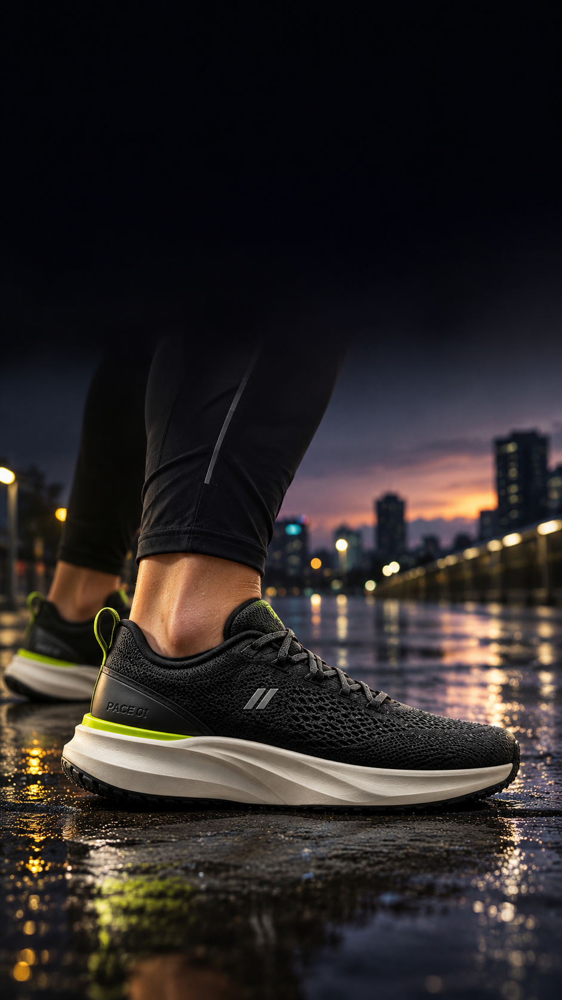
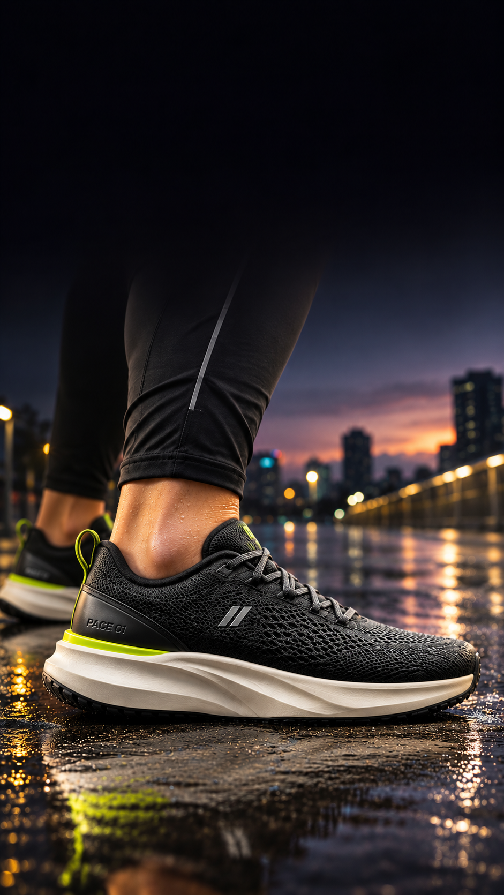
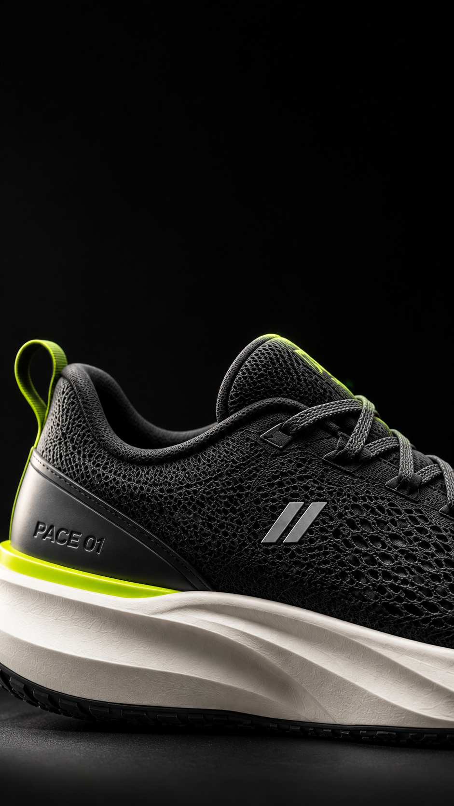
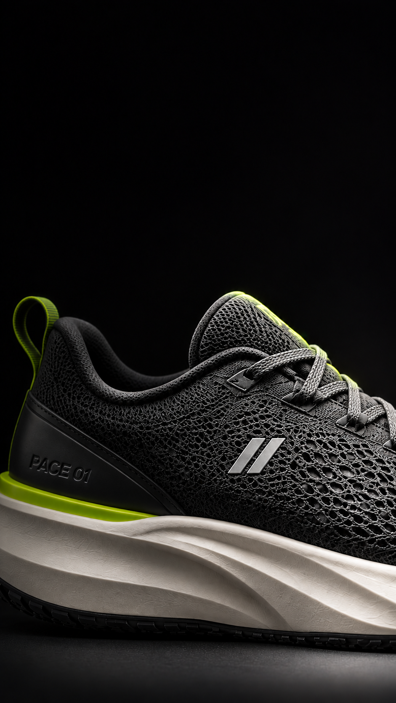
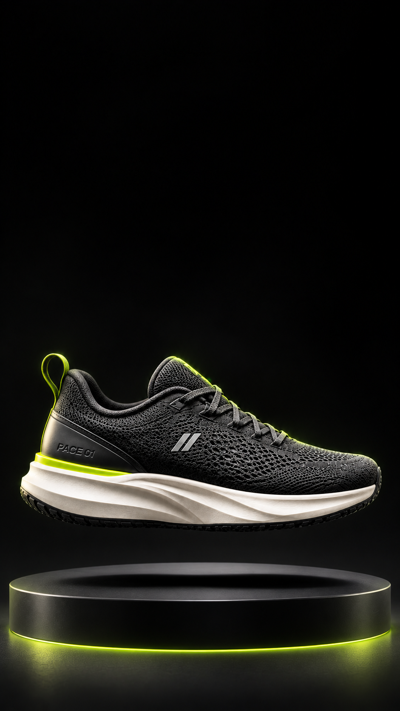
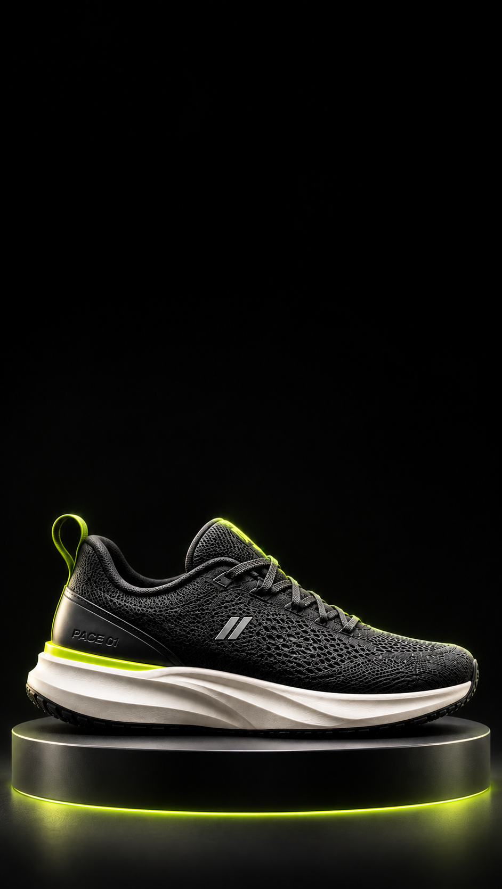
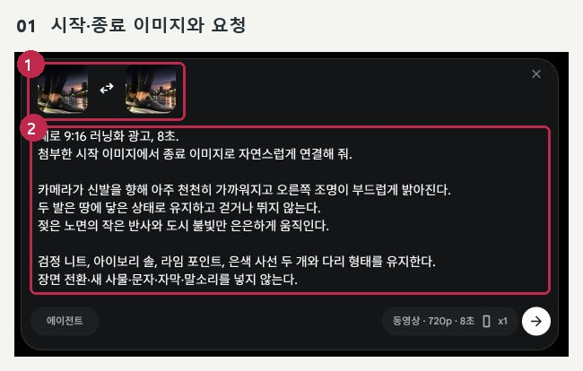
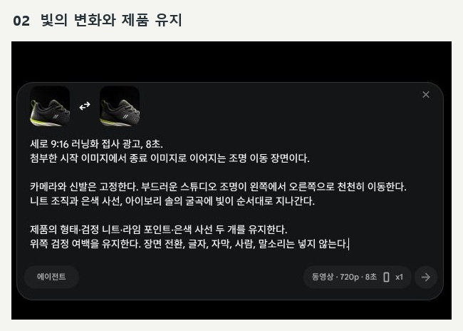
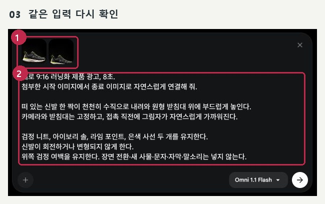
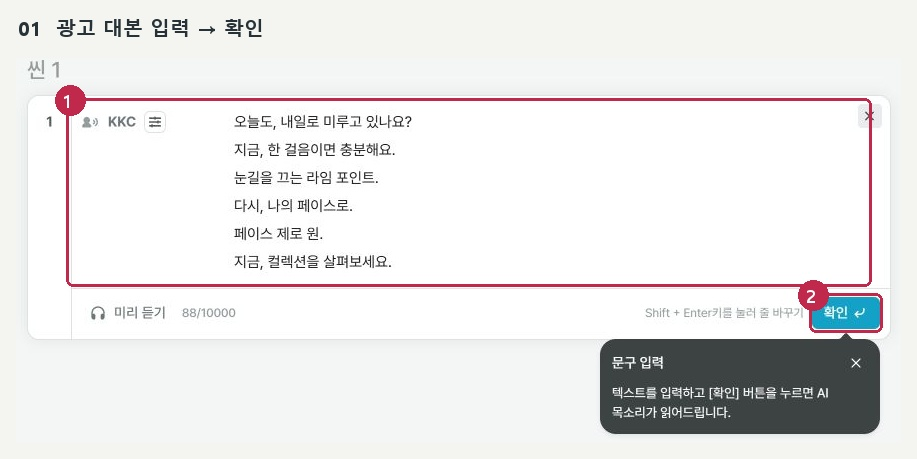

광고 결과로 돌아가기실제 사용한 원문
ChatGPT 이미지 6개 · Flow 영상 3개 · Vrew 대본. 같은 대화에서 순서대로 실행합니다.
S01-start

[만들 이미지]
가상 러닝화 PACE 01 광고의 S01 시작 이미지 한 장을 만들어 줘.
세로 9:16, 실제 광고 사진처럼 표현해 줘.
[제품 유지]
첨부 사진의 검정 니트, 아이보리 솔, 라임 포인트, 은색 사선 두 개를 유지해 줘.
[장면]
해 질 무렵 젖은 도심 러닝 코스. 검정 운동복을 입은 사람의 종아리 아래와 신발만 보여 줘.
신발은 오른쪽을 향하고 바닥에 닿아 있어. 낮은 카메라와 은은한 도시 불빛으로 연출해 줘.
[구도]
신발 전체가 아래쪽에 보이게 하고, 위쪽 3분의 1은 어둡게 비워 줘.
문구·자막·가격은 넣지 마. 이미지만 생성해 줘.
S01-end

[만들 이미지]
바로 앞에서 만든 S01 시작 이미지와 연결되는 종료 이미지 한 장을 만들어 줘.
세로 9:16 광고 사진이야.
[그대로 유지]
같은 러닝화, 같은 사람, 같은 젖은 도심 코스와 구도를 유지해 줘.
제품의 검정 니트·아이보리 솔·라임 포인트·은색 사선 두 개를 바꾸지 마.
[바꿀 부분]
카메라만 신발 쪽으로 약간 가까워진 모습이야.
신발은 계속 바닥에 닿아 있고, 오른쪽에서 들어오는 은은한 빛이 니트와 솔을 조금 더 밝게 비춰.
[주의]
신발 전체와 위쪽 어두운 여백을 유지해 줘.
문구·자막·가격 없이 이미지만 생성해 줘.
S02-start

[만들 이미지]
같은 PACE 01 러닝화 광고의 S02 시작 이미지 한 장을 만들어 줘.
세로 9:16, 고급 제품 광고의 접사 사진이야.
[제품 유지]
앞 이미지의 검정 니트, 아이보리 솔, 라임 포인트, 은색 사선 두 개를 그대로 유지해 줘.
[장면과 구도]
사람 없이 신발 한 짝의 바깥쪽을 가까이 촬영해 줘.
신발은 오른쪽을 향하고, 니트 조직·은색 사선·솔의 굴곡이 아래쪽 3분의 2에 선명하게 보여.
배경은 짙은 검정 스튜디오이고, 위쪽은 자막을 넣을 어두운 여백이야.
빛은 왼쪽에서 부드럽게 들어와.
[주의]
글자·자막·가격은 넣지 말고 이미지 한 장만 생성해 줘.
S02-end

[만들 이미지]
바로 앞 S02 접사와 연결되는 종료 이미지 한 장을 만들어 줘.
세로 9:16으로 만들어 줘.
[유지]
같은 신발의 위치·크기·접사 구도와 검정 배경을 유지해 줘.
니트 조직, 은색 사선 두 개, 라임 포인트, 아이보리 솔이 같은 제품이어야 해.
[변화]
조명이 왼쪽에서 오른쪽으로 이동한 뒤의 모습이야.
오른쪽 니트와 은색 사선이 밝아지고, 왼쪽 뒤꿈치는 약간 어두워져.
카메라와 신발은 움직이지 않아.
[마무리]
위쪽 어두운 여백을 유지하고 문구·자막 없이 이미지만 생성해 줘.
S03-start

[만들 이미지]
PACE 01 광고의 S03 시작 이미지 한 장을 만들어 줘.
세로 9:16, 고급 스튜디오 제품 광고 사진이야.
[제품 유지]
같은 검정 니트 러닝화 한 짝이야. 아이보리 솔, 라임 포인트, 은색 사선 두 개를 유지해 줘.
[장면]
검정 스튜디오에서 낮은 원형 받침대 위 10cm에 신발이 떠 있어.
옆모습이 보이고 앞코는 오른쪽을 향해. 신발 아래에 자연스러운 그림자를 넣어 줘.
라임빛 테두리 조명과 흰색 소프트 조명으로 제품을 또렷하게 보여 줘.
[구도]
신발 전체를 화면 아래쪽 절반에 배치하고 위쪽은 타이포그래피용 검정 여백으로 남겨 줘.
사람·문구·가격 없이 이미지 한 장만 생성해 줘.
S03-end

[만들 이미지]
내가 선택한 S03 1번 제품 사진과 이어지는 종료 이미지 한 장을 만들어 줘.
세로 9:16이야.
[유지]
검정 스튜디오, 낮은 원형 받침대, 오른쪽을 향한 같은 신발을 유지해 줘.
검정 니트·아이보리 솔·라임 포인트·은색 사선 두 개도 유지해 줘.
[변화]
떠 있던 신발이 천천히 내려와 받침대 윗면에 자연스럽게 놓인 마지막 모습이야.
카메라와 받침대의 크기·위치는 그대로 두고 제품의 옆면과 그림자를 자연스럽게 표현해 줘.
[구도]
신발 전체가 보이고 위쪽 검정 여백이 넓어야 해.
새 사물·문구·자막 없이 이미지 한 장만 만들어 줘.
Flow S01

세로 9:16 러닝화 광고, 8초.
첨부한 시작 이미지에서 종료 이미지로 자연스럽게 연결해 줘.
카메라가 신발을 향해 아주 천천히 가까워지고 오른쪽 조명이 부드럽게 밝아진다.
두 발은 땅에 닿은 상태로 유지하고 걷거나 뛰지 않는다.
젖은 노면의 작은 반사와 도시 불빛만 은은하게 움직인다.
검정 니트, 아이보리 솔, 라임 포인트, 은색 사선 두 개와 다리 형태를 유지한다.
장면 전환·새 사물·문자·자막·말소리를 넣지 않는다.
Flow S02

세로 9:16 러닝화 접사 광고, 8초.
첨부한 시작 이미지에서 종료 이미지로 이어지는 조명 이동 장면이다.
카메라와 신발은 고정한다. 부드러운 스튜디오 조명이 왼쪽에서 오른쪽으로 천천히 이동한다.
니트 조직과 은색 사선, 아이보리 솔의 굴곡에 빛이 순서대로 지나간다.
제품의 형태·검정 니트·라임 포인트·은색 사선 두 개를 유지한다.
위쪽 검정 여백을 유지한다. 장면 전환, 글자, 자막, 사람, 말소리는 넣지 않는다.
Flow S03

세로 9:16 러닝화 제품 광고, 8초.
첨부한 시작 이미지에서 종료 이미지로 자연스럽게 연결해 줘.
떠 있는 신발 한 짝이 천천히 수직으로 내려와 원형 받침대 위에 부드럽게 놓인다.
카메라와 받침대는 고정하고, 접촉 직전에 그림자가 자연스럽게 가까워진다.
검정 니트, 아이보리 솔, 라임 포인트, 은색 사선 두 개를 유지한다.
신발이 회전하거나 변형되지 않게 한다.
위쪽 검정 여백을 유지한다. 장면 전환·새 사물·문자·자막·말소리는 넣지 않는다.
Vrew 광고 대본

오늘도, 내일로 미루고 있나요?
지금, 한 걸음이면 충분해요.
눈길을 끄는 라임 포인트.
다시, 나의 페이스로.
페이스 제로 원.
지금, 컬렉션을 살펴보세요.